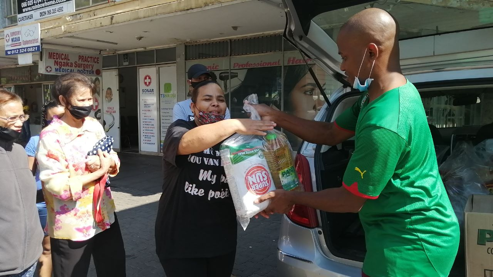
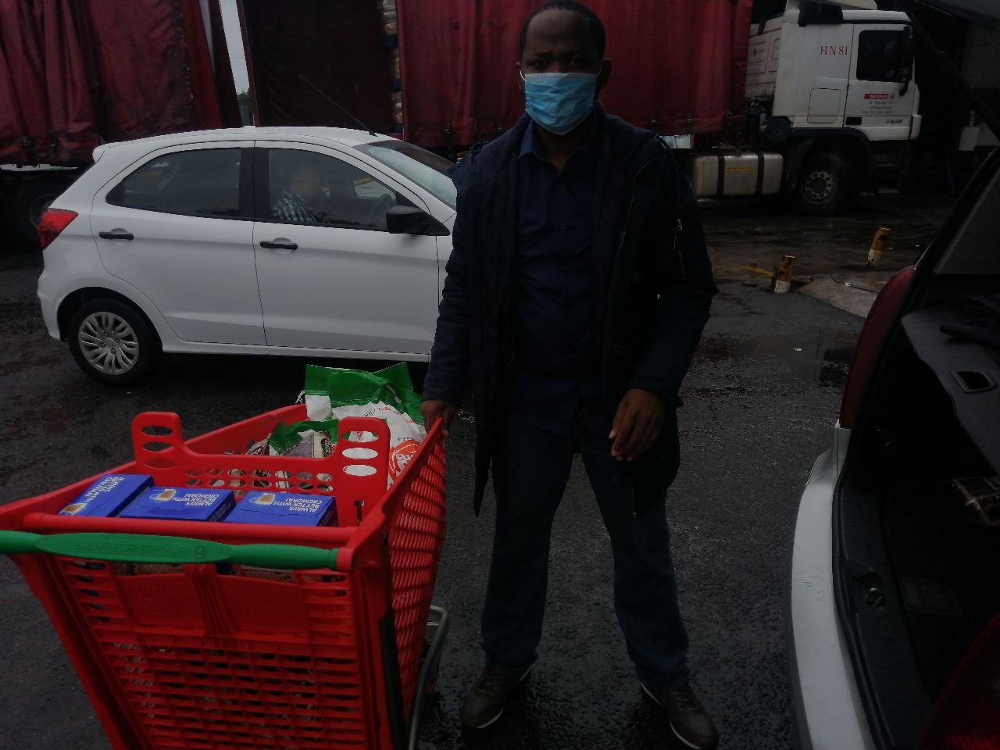

Faith In Action
We believe the Church exists not just for itself, but for the world. Discover how we are making a tangible difference in thousands of lives.

Serving the Whole Person, Whole Community
Love and beloved outreach international is our charity arm where we express the love of God to our community all over the world by reaching out to the less-privilege and the trouble world that we are a part off, we reach out to people through our charity arm of the ministry.
Through its outreach program, Love and Be Love Outreach International provide support and prayers to people in Pretoria’s inner city and beyond. Those seeking Almighty God’s hand in their lives are encouraged to engage the entity, which seeks to inspire and intercede on their behalf.
As a devout servant of God, the founder of LBOI, Br Solomon Dini, has understood that God’s words have never changed and can make anyone a winner if they avail themselves of them. In addition to teaching, counseling, blessing, and delivering, God continues to employ His servant as an instrument of salvation and blessing. We aim to reach millions of people around the world through various platforms (Social Media, Online Television, and radio stations).
Community Outreach in Detail

No One Goes Hungry on Our Watch
We have been running programmes to help the less fortunate get food on the table.
Your Gift Changes Lives
100% of charitable donations go directly to our outreach programs. No administrative fees. Every dollar makes a difference.
Even a small gift, given consistently, creates an outsized impact in the lives of the people we serve.
PayPal
Send to ArmOfGodTV via PayPal
Bank Transfer
Contact our office for direct bank transfer details

Partner With Us in
Transforming Our Community
Whether through giving, volunteering, or prayer — your partnership amplifies our ability to serve those who need it most.